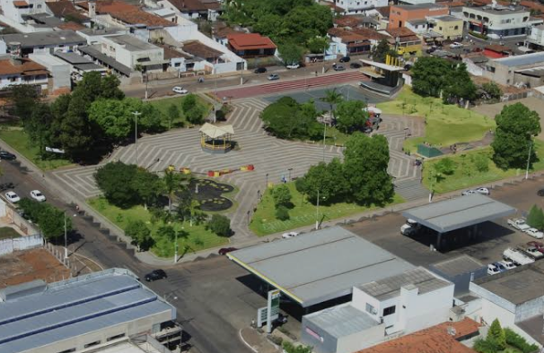
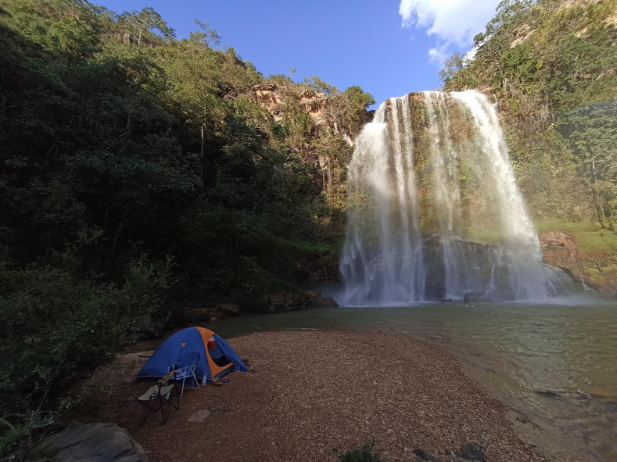

Pontos Turísticos Imperdíveis
Praca Abel Ferreira
A praça homenageia Abel Ferreira, renomado clarinetista e compositor nascido em Coromandel em 15 de fevereiro de 1915. Autodidata, Abel iniciou sua carreira musical na infância, destacando-se por sua habilidade com a clarineta e o saxofone. Entre suas composições mais conhecidas estão "Chorando Baixinho", "Acariciando" e "Luar de Coromandel" . Em 2015, ano do centenário de seu nascimento, a cidade inaugurou um busto em sua homenagem na praça que leva seu nome.
Cachoeira do Santuário
A Cachoeira do Santuário é um dos tesouros naturais de Coromandel, Minas Gerais, situada a cerca de 46 km da área urbana da cidade, na região do Pântano de Santa Cruz. Com uma queda d’água de aproximadamente 45 metros, ela forma um poço de águas cristalinas, ideal para banho e momentos de contemplação.
Clube AABB Coromandel
Como parte da rede nacional de AABBs, o clube oferece uma variedade de atividades esportivas e de lazer para seus associados e visitantes. Embora detalhes específicos sobre as instalações da unidade de Coromandel não estejam amplamente disponíveis online, as AABBs geralmente contam com estruturas como piscinas, quadras esportivas, salões de festas e áreas de convivência.